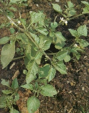
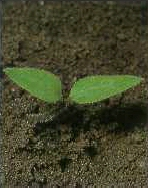
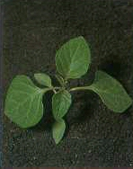

FEKETE CSUCSOR (ebszőlő)
SOLANUM NIGRUM L. (SOLNI)
ÉLETFORMA: T4
TERMÉS: Termése fekete bogyó. Magja ferdén,
szabálytalanul ovális, erősen összenyomott. Töve kissé görbült. Sárga vagy
barnássárga, igen finom recehálózattal, amely tompa fényű vagy csak gyengén
csillog. Hossza 2,0 mm, szélessége 1,0 mm. Ezermagtömege 0,9 g. A magvak száma
növényenként 500 körül van.
CSÍRANÖVÉNY: Sziklevelei tojásdadok, csúcsosak, nyélbe
keskenyedők. Az első lomblevelek kerekded-tojásdadok, ép szélűek, nyelesek,
sötétzöld színűek.
KIFEJLETT NÖVÉNY: Egyéves, rövid orsógyökerű, 30-60 cm
magas növény. Szára hengeres vagy szegletes, kopasz vagy pelyhesen szőrözött,
erősen ágas. Sötétzöld, tojás alakú vagy csaknem háromszögű, hegyes csúcsú
levelei hirtelen nyélbe keskenyedők, ép vagy fogas szélűek, igen változatos
alakúak, gyakran egy növényen is eltérőek, kopaszok vagy ritka horgas szőrökkel
fedettek. Rövid kocsányú, fehér virágai forgó virágzatot alkotnak.
 |
 |